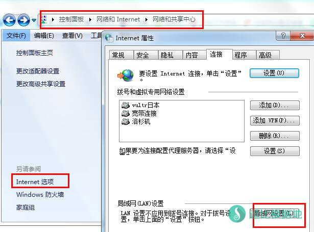
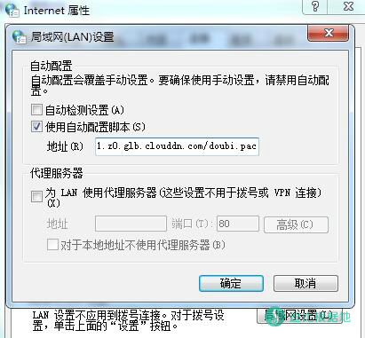
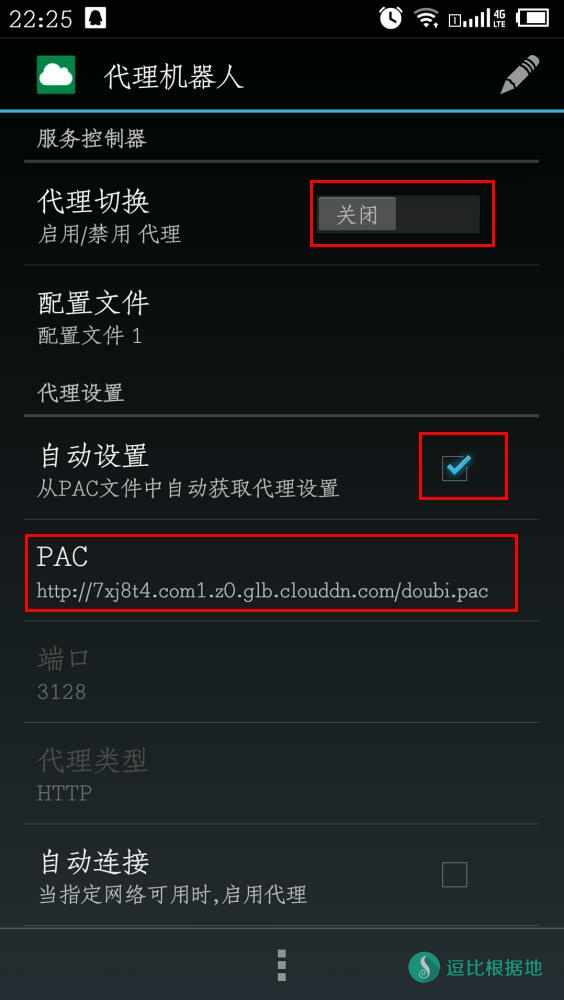
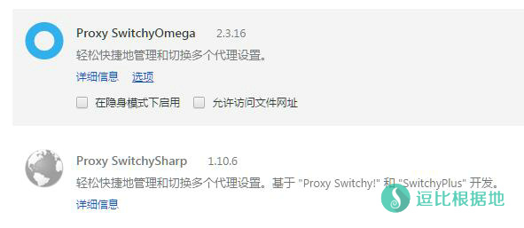
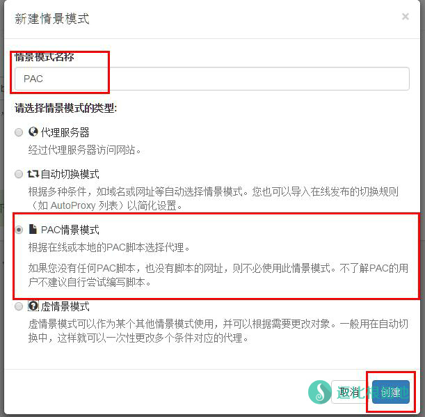
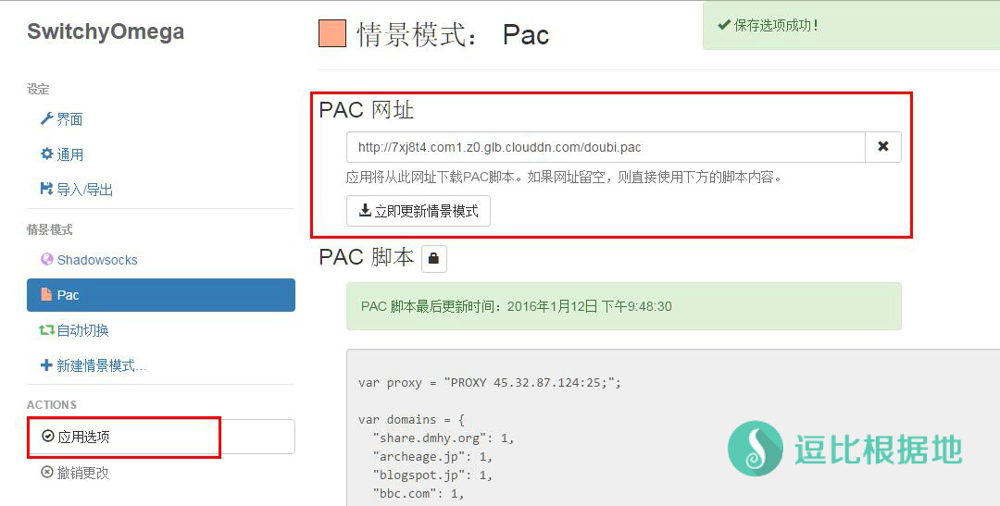

本文章主要介绍如何利用国外VPS搭建多协议代理服务。
墙封锁了 HTTP/Socks5 代理，HTTP 代理是关键词过滤，Socks5 代理则是封锁协议。不过某些特殊的低端口并没有这么处理，已知的有 21，25。
20端口已经被封杀，21端口目前会被限速400Kbps，换算后约合50KB/S，建议使用25端口，不限速。
另一个更简单的搭建办法：一键搭建HTTP代理服务器的小工具 ——Tiny Proxy (附在线PAC制作方法)
目前 HTTP明文代理 方式科学上网效果不如以前，防火墙针对性更强，如非必须，不推荐使用！
搭建代理服务器
在 25 端口搭建http/https代理
Tip：centos 现在只需要清理系统防火墙规则即可使用，不过我推荐Ubuntu 14.04以上和Debian 7！
Ubuntu/Debian（需要一行一行复制安装）:
apt-get update && apt-get -y install squid3 wget -O /etc/squid3/squid.conf "http://github.itzmx.com/1265578519/PAC/master/squid/ubuntu-squid.conf" mkdir -p /var/cache/squid && chmod -R 777 /var/cache/squid /etc/init.d/squid3 stop squid3 -z /etc/init.d/squid3 restart
CentOS 6.7 x64（需要一行一行复制安装）:
setenforce 0 ulimit -n 800000 echo "* soft nofile 51200" >> /etc/security/limits.conf echo "* hard nofile 51200" >> /etc/security/limits.conf echo "alias net-pf-10 off" >> /etc/modprobe.d/dist.conf echo "alias ipv6 off" >> /etc/modprobe.d/dist.conf killall sendmail /etc/init.d/postfix stop chkconfig --level 2345 postfix off chkconfig --level 2345 sendmail off yum -y install squid wget wget http://github.itzmx.com/1265578519/PAC/master/squid/centos-squid.conf -O /etc/squid/squid.conf mkdir -p /var/cache/squid chmod -R 777 /var/cache/squid squid -z /etc/init.d/squid restart chkconfig --level 2345 squid on iptables -t nat -F iptables -t nat -X iptables -t nat -P PREROUTING ACCEPT iptables -t nat -P POSTROUTING ACCEPT iptables -t nat -P OUTPUT ACCEPT iptables -t mangle -F iptables -t mangle -X iptables -t mangle -P PREROUTING ACCEPT iptables -t mangle -P INPUT ACCEPT iptables -t mangle -P FORWARD ACCEPT iptables -t mangle -P OUTPUT ACCEPT iptables -t mangle -P POSTROUTING ACCEPT iptables -F iptables -X iptables -P FORWARD ACCEPT iptables -P INPUT ACCEPT iptables -P OUTPUT ACCEPT iptables -t raw -F iptables -t raw -X iptables -t raw -P PREROUTING ACCEPT iptables -t raw -P OUTPUT ACCEPT service iptables save
装完后记得reboot重启下服务器确保生效。
然后下载该PAC文件后，把其中的127.0.0.1修改为你的服务器IP即可。
注意服务器DNS修改成8.8.8.8（配置文件目前强制指定了DNS，可以无需修改）
squid3 -v #查询squid版本 /etc/init.d/squid3 restart #重启squid服务 /etc/init.d/squid3 status #查看squid服务运行状态 netstat -lntp #查询25端口是否启动
搭配锐速，效果更棒：优秀的免费VPS加速方案——锐速，其他优化：Linux上的shadowsocks服务端优化方法
推荐使用Vultr VPS，文章右边侧栏有链接和20美元的优惠券！
给大家个PAC地址
http://pac.itzmx.com/abc.pac
使用这两个PAC需要账号认证：
帐号：root
密码：pac.itzmx.com
如何制作在线PAC？看这个教程。
使用方法
Windows
推荐使用我写的一个软件一个快捷方便且实用性高的PAC管理器 —— SquidPAC Tools
使用方法很简单，默认带有我自建的服务器，打开软件后直接点托盘菜单的启动代理！就可以科学上网了！
Internet选项 -> 连接 选项卡 -> 局域网设置(如果是电脑拨号上网, 这里点'设置') -> 使用自动配置脚本 -> 填入PAC地址 -> 确定


Mac OS X
系统设置 -> 网络 -> 高级 -> 代理 -> 自动代理配置 -> URL中填入PAC地址 -> 好（因为没有设备就不截图了。）
iOS (iPhone/iPad)
- 打开设置, 选择Wi-Fi
- 选择当前使用的热点
- 拖到最下面的代理设置，选择"自动"，填写PAC地址
（因为没有设备就不截图了。）
Android
如下图设置即可！

Chrome浏览器
如果你是Chrome浏览器或者其他Chromium内核的浏览器，请安装Proxy SwitchyOmega或Proxy SwitchySharp插件（点击名字进入chrome应用商店），然后如下设置。
以下以Chrome浏览器Proxy SwitchyOmega插件为例。
打开Chrome扩展程序页面，然后点击Proxy SwitchyOmega下面的选项。

然后新建一个情景模式，名称任意，类型选PAC情景模式，点击创建。

这时候在PAC网址中填入在线PAC链接，或者留空然后在下方的PAC脚本中填入PAC内容，然后点击左边的应用选项。

这时候Proxy SwitchyOmega插件就设置完毕了，在右上角的图标选中Pac情景模式，打开google网址试试吧！
本文章搭建代理服务器部分转载自：http://bbs.itzmx.com/thread-8815-1-1.html
转载请超链接注明：逗比根据地 » 一种便捷的全自动代理方式——PAC代理
责任声明：本站一切资源仅用作交流学习，请勿用作商业或违法行为！如造成任何后果，本站概不负责！